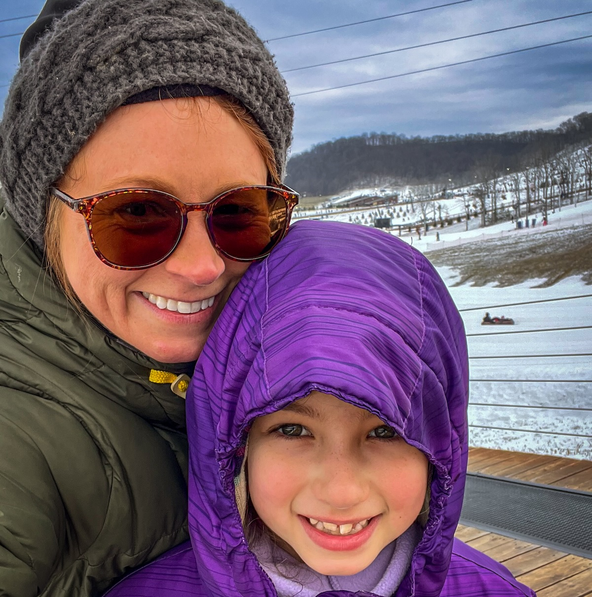
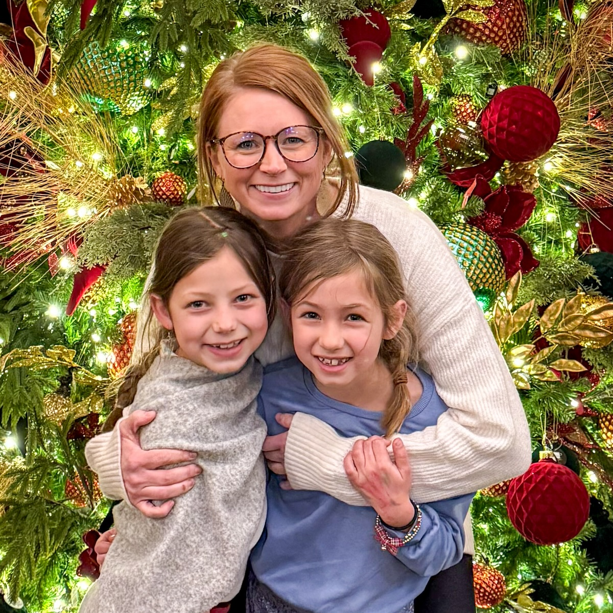

Megan runs the parts of this that you can't really see.
On presentation nights, she puts together a charcuterie board, makes sure everyone has what they need — usually a blanket — and keeps the whole thing from falling apart before it starts. She doesn't make a big deal about any of it. It just happens.
When one of the kids is being too much, she has a reliable solution: send them out to the shop one at a time to go work with dad. Ruby ends up out there the most.
She takes all of our photographs, gets the kids in line without making it feel like a production, and quietly makes sure that what we're doing actually looks like what we're trying to do.
I don't know how she does it. I don't think she'd have a great answer either. It just works.
Meet the rest of the family »